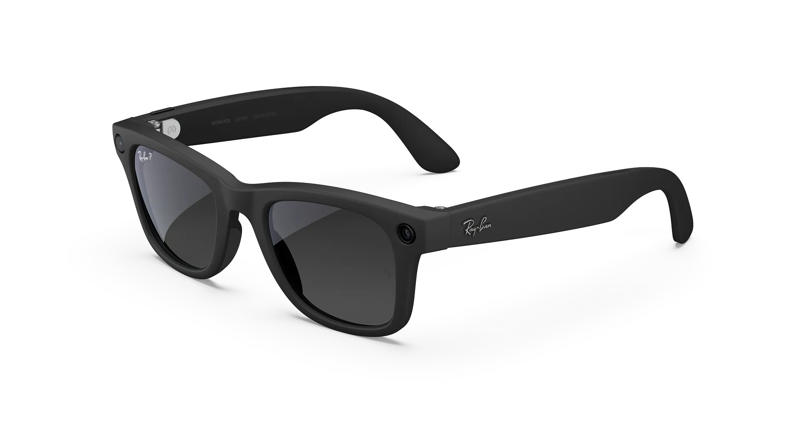

Ray-Ban Meta (Gen 3) Wayfarer
NOVO
Cor da Armação: Fosco Preto
Lente: Transparente / Filtro Luz Azul-Violeta
R$ 3.699,00
COMPRE AGORAÓculos inteligentes que capturam sua perspectiva, tocam som e conectam você ao mundo — tudo com o estilo icônico Ray-Ban e a inteligência Meta.
Detalhes
Descrição da Armação
| Código do modelo | RW4011 601S1 53-22 |
|---|---|
| Formato da armação | Quadrado (Wayfarer Gen 3) |
| Cor da armação | Fosco Preto |
| Tipo de material da armação | Injetado |
| Cor da haste | Preto |
Informações da Lente
| Cor e Tipo de Lente | Verifique disponibilidade via WhatsApp |
|---|---|
| Tratamento das lentes | Verifique disponibilidade via WhatsApp |
| Preparação para Receita | Disponível para lentes de grau conforme a disponibilidade e prescrição |
Tamanho do Produto (Padrão)
| Tamanho | 53-22 |
|---|---|
| Altura da lente | 43,6mm |
| Comprimento da haste | 155mm |
| Cobertura facial | Ajuste para rosto grande, ponte alta |
Câmera (12 MP Ultra-Wide)
| Câmera - Imagens | 3024x4032px |
|---|---|
| Câmera - Vídeo | 3K Ultra HD a 30fps |
Áudio
| Áudio | 2 alto-falantes abertos, array de 6 microfones |
|---|---|
| Volume | Áudio open-ear aprimorado com redução avançada do ruído do vento |
Controles
| Controles | Toque e comando de voz |
|---|---|
| Assistente | Meta AI |
Bateria e Memória
| Bateria | Recarregável, até 9h com uma carga e até 50h adicionais com o estojo |
|---|---|
| Memória | 32GB (1000+ fotos ou 100+ vídeos de 30s) |
Conectividade
| Conectividade | Wi-Fi 6 | Bluetooth 5.3 |
|---|
Compatibilidade
| Compatibilidade | iOS 18.6+ / Android 15+ |
|---|
O icônico Wayfarer agora chega à Geração 3 com um design mais fino e tecnologia de IA ainda mais integrada. Capture fotos e vídeos em 3K Ultra HD, ouça músicas e podcasts, faça chamadas, use a Meta AI e acesse funções inteligentes sem precisar tirar o celular do bolso.
(1) Algumas funcionalidades podem não estar disponíveis em todas as regiões ou podem exigir a criação de uma conta Meta e/ou download do aplicativo Meta View. (2) Compatível apenas com dispositivos iOS e Android. (3) O assistente Meta AI está disponível em beta em inglês nos EUA e Canadá. Outros idiomas e regiões podem ser adicionados no futuro. (4) A duração da bateria varia de acordo com o uso. (5) Para garantir a qualidade de imagem e vídeo, use os óculos em ambientes bem iluminados. (6) A funcionalidade de áudio pode ser limitada em ambientes ruidosos.